A comprehensive, ready-to-deploy AI learning program designed for people with no prior AI experience. Help your team confidently navigate the AI revolution with our proven 10-challenge learning journey.
Low stakes. Low risk. Privacy-first design. This website collects no information about you. Some of the content it shows comes from other companies, which is explained in the Privacy section below.
Ready to deploy today. Complete program with all materials, instructions, and support resources included. Fully customizable to match your organization's branding and specific needs.
We have identified four stages of AI use that we think are important as we start to explore AI:
Recognize Identify where AI exists in your world and how it can be useful
Investigate Explore AI tools and their potential
Supercharge Leverage AI to enhance creativity, productivity, and decision-making, potentiating your actions
Exchange Collaborate with AI in a dynamic, interactive way, blending human expertise with AI's capabilities
AI Challenges
Choose a challenge to open it.
Privacy and embedded content
This website does not collect information about you. It does not use cookies, analytics, sign-ins, or tracking, and it does not record anything you type.
Some challenges show content from other companies. These include YouTube videos, a Spotify episode, Google Drive and Google Docs files, a Google Apps Script tool, and a quiz hosted on a personal GitHub Pages site. That content loads only when you open a challenge that contains it. When it loads, your browser contacts that company, which may set cookies or record your visit under its own privacy policy. YouTube videos use YouTube's privacy-enhanced mode.
The font comes from Google Fonts. Google can see your internet address when the font loads, as any website's host can. All pictures are stored with this website.
The AI tools linked in the challenges are run by their own companies. Once you leave this website, their terms and privacy policies apply.
Think before you share. Do not paste personal, student, employee, or confidential information into an AI tool unless your organization allows it.
Interested in setting this up at your organization?
Artificial Intelligence (AI) is the ability for a computer to perform tasks that are considered human-like. These tasks include offering insight from large data sources, engaging in realistic conversations, and generating text and images.
You probably have heard of ChatGPT - it became very popular near the end of 2022. ChatGPT (and other services like it) are known as generative AI because they can generate responses. We'll learn more about generative AI, large language models (LLMs) and other nerdy AI topics later. For right now, let's just dig in!
Activity #1: Set up an account (or two!)
Let's look at the five most popular sites for using AI. You should create a free account at one (or more!) of the following services; each one has a particular strength. Note that most of these companies are improving their services all the time; the following descriptions are accurate at the time of writing (March, 2025) and are subject to change.
All of the AI services listed have a free tier - that's all you need for this challenge; you may decide later that you'd like to pay for one of them. While some of these services do not require an account, you may not be able to access all the features if you don't create an account.
ChatGPT (by OpenAI) is probably the most well-known AI service. The strength of ChatGPT is that it is a very powerful general purpose AI service. You can use it for general questions, help analyzing documents and data, and creating images.
Gemini (by Google) is also a very powerful generic AI service. The images Gemini creates are excellent. Gemini also ties into all your Google services (Google Docs, Gmail, etc.).
Claude (by Anthropic) is known for its conversation, literary expertise, and its coding prowess. If you have any need for developing code (we'll explore vibe coding later on - no coding experience necessary!), Claude is for you. Claude can not make images, though it can make rudimentary illustrations.
Perplexity is probably the best AI service when it comes to facts. Perplexity is known for providing comprehensive citations for any text it generates. This helps mitigate hallucinations (AI services are known to make up information and we call those hallucinations). Perplexity cannot make images.
MetaAI (by Meta, formerly Facebook) seems to be the most creative AI service especially when it comes to image generation. You can log in to Meta with a Facebook account or Instagram account.
Copilot (by Microsoft) comes with every Microsoft account. The free version is somewhat limited.
You should set up an account with at least one of these services. If you don't have a preference right now, we recommend ChatGPT and Gemini. After you get some AI experience under your belt you might want to try more of the services.
Activity #2: Understand the anatomy of an AI service
Most AI services have a very similar layout. The diagram below captures the pieces you'll initially need to know. Some services have things in slightly different spots and have more features, but generally speaking this should get you going.
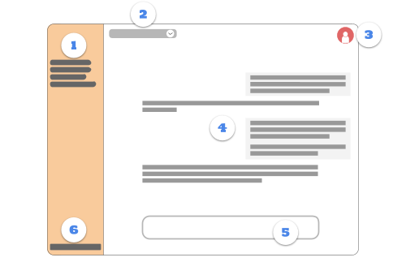
The left navigation pane houses previous conversations. You can typically revisit past conversations (and pick up right where you left off!).
Most AI services have a way to select the "model" you are using. This typically means the version of the AI services. Usually the different versions have a tradeoff (speed for depth and accuracy). While we're just getting started, the default model is fine.
Your account is usually accessed through this avatar. Just boring administrative stuff.
The main part of the screen is where the current conversation happens. You'll be able to see the chat history of what you've typed and how the AI has responded. This chat includes images that have been generated.
The bottom text box is where you type your prompt for AI. The text you type (to ask questions or direct the AI to do something) is called a prompt. The more specific it is, the better a response you'll get.
More administrative stuff here - sometimes this is where you access your profile (instead of the avatar in the upper right).
Activity #3: Have some fun
Let's dig right in! By now you should have an account with one of the AI services. Once you go through any orientation that they might provide, you should start your first chat. Most of the services have one text box right in the middle of the screen; this is used for starting a conversation. Click into it and give it a prompt. After you do, the screen will look more like a chat (the text box moves to the bottom).
There are a lot of idioms in our language. "Break a leg" means to wish someone luck. "Once in a blue moon" means that something happens very rarely.
Let's have the AI create some fun, fake idioms. You can use the prompt below or modify it with your own language:
Please generate a list of 20 fictitious idioms.
Hopefully the AI was able to generate a few good ones.
Now comes the cool part! Up recently, we would go to Google and ask a question. Google would give us an answer and we'd go on our way. Unlike typical search engines, you can continue the conversation with AI! Pick one or two that you like and ask AI to generate more idioms like it. You can refer to the previous response from AI and it will know what you mean.
For instance, you might try:
Oh! I like #4 and # 18. Please generate more idioms that are similar to them.
You can keep this conversation alive and ask for more idioms or ask AI to generate idioms related to something specific.
Enjoy the rest of your day, and don't be afraid to poke around a bit more with AI!
What we think you'll love
Determining if content was created by humans or by AI
Introduction
The ability of AI to create images, text, video, and music has increased dramatically. It used to be very easy to look at content and tell if it was created by AI; not so anymore. Heck, I made this quiz and I didn't score a 100% on it!!! So don't feel bad if you don't get them all. Or if you don't get half of them - they can be tricky.
But that's the point - we are looking to see what AI is capable of. Don't get discouraged this early on in your AI journey!
Activity #1: AI or Not
In the following examples, decide if the content you see was created by a human or by AI. At the end, you'll get to see the correct answers.
Activity #2: Review your Results
Once you are done classifying all the content you will see your results. If you click on the thumbnails you'll see more information about that particular content (if it was human or AI and the provenance of that content as well).
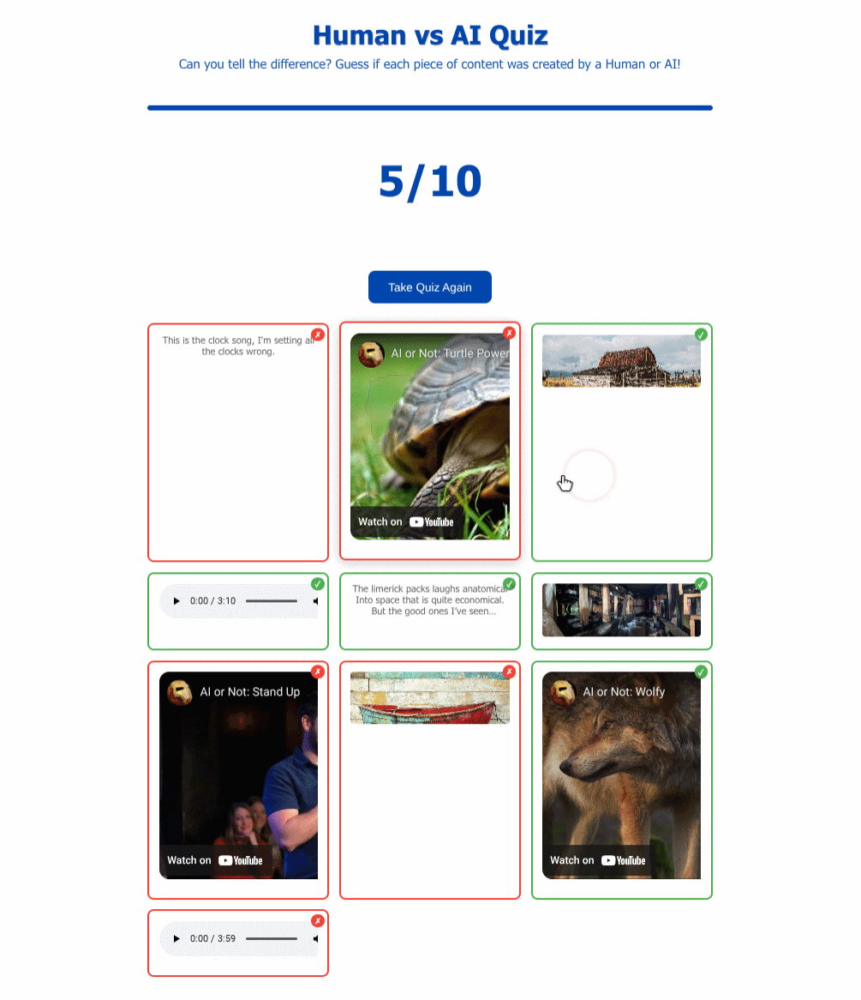
Activity #3: Share your results
Please think about sharing your results! Click on the number below that corresponds to how many you got right. This is completely anonymous.
Once you submit your results you can see how everyone else has done. Note that these stats include everyone who has completed this challenge.
BONUS: Learn about the new AI video generators
Enjoy the rest of your day, and don't be afraid to poke around a bit more with AI!
What we think you'll love
Transforming a generic answer into something useful
Crafting precise, tailored prompts
Getting more accurate responses
Introduction
Prompt refinement is a game changer when working with AI. By starting with a basic question and then adding context, detail, and desired outputs, you can dramatically improve the quality of the responses. This exercise will show you how clear, specific prompts produce detailed answers that can help you every day.
Activity #1: The Basic Prompt
Ask a very broad question.
Choose a topic relevant to your work (e.g., lesson planning, student engagement, industry research, campus events, etc.):
List 10 student involvement activities.
or
Help me create an engaging learning environment.
or
Please give me tips when talking about financial aid.
Run your prompt and review the output.
Expect a broad, generic response.
Activity #2: The Refined Prompt
When using AI tools, context is king. AI wants to help you, but you need to paint a portrait with as much detail as you can to elicit high-quality responses. The more details you can provide, the better the response will be. Add the following information to your prompt:
Context: Provide background details that situate the question or task.
Details: Mention specific elements you want included in the response.
Constraints: Identify any limitations or requirements for your situation.
Output: Specify the desired response length, format, style, tone, etc.
Perspective: Providing a desired point of view helps frame the answer.
In the following example, the main point of the prompt is to have AI help create an engaging learning environment - notice the details that accompany the prompt:
I am an English professor at a community college teaching a first-year composition class.
I have a class of 20 students that meets for 50 minutes, three times a week in a traditional in-person classroom. It has a whiteboard, projector, and moveable desks.
It is a shared classroom that I cannot personalize and must leave exactly as I find it each day.
Help me create an engaging learning environment. As output, I’d like a list of zero-cost solutions that I can implement as soon as next week.
In particular, I’d like to see how changes to the physical space and sequence of instructional activities can improve student participation and class discussion.
Think about this from the perspective of first-year students who may be experiencing mid-semester fatigue and burnout.
For each listed suggestion, explain how I can quickly implement it into the classroom and what underlying challenges to student engagement the solution addresses.
Run this prompt and review the output.
Expect something actionable and insightful!
Activity #3: Continue the Conversation
Once your refined prompts return actionable responses, it’s time to use those results even more. Each conversation ("chat") that you have with AI is contextual. AI will remember what is said previously in the chat and continue to reference that information with subsequent queries in the same chat.
Ask for specific uses of that information.
Turn these ideas into a one-page PDF reference sheet I can share with colleagues.
Ask to apply the general principles to a specific situation.
My next lesson is focused on assessing the quality of a research paper source. I have a sample source to share with my students and each student was asked to find one source related to their own research topic. Identify which of these solutions is best fit for this lesson and provide an outline for the 50-minute session.
Explore different perspectives.
I also teach this class in an asynchronous online format with a different group of students. I like the two classes to have roughly the same experience despite the difference in modality. How can we repurpose and adapt the strategies used in a face-to-face classroom for an engaging asynchronous experience? Since they do not meet together at a specific time or place, group work is challenging, but I still want the students to benefit from a sense of shared learning.
What differences did you notice between the generic and refined responses?
Which specific details in your refined prompt improved the output the most?
How might this prompt refinement technique be applied to your daily tasks?
When would exploring multiple perspectives enhance your prompt response?
What we think you'll love
Generating images from text
Refining images with explicit prompts
Introduction
Have you ever found an image online, copied it, and put it into work (a slideshow or a handout)? If you have, there's a good chance that you are in violation of copyright (fair use is not a reliable methodology for using copyrighted material).
Of course, you could go to sites like Pixabay or Unsplash to find millions of copyright-free material. Those sites have an enormous collection of high-quality images you can use for free.
But you can also just generate your own images! You can create your very own, bespoke, niche image. Do you need a photograph of an elephant playing a violin for a lesson? Well, there's an AI for that!
Activity #1: Generate an image
These images were created with Gemini.
You'll want to use either ChatGPT, Google Gemini, or Meta AI for this one (although Meta AI seems to be the most creative right now). There are a few things to remember about image generation:
You'll need to have an account to generate images at most sites.
You probably won't get exactly what you want on your first try. Some AI tools will let you iterate on the work they generate and others won't. You'll have to experiment.
There is no such thing as being too specific when prompting AI for an image - be as verbose as you can!
You can also specify what genre of art you want (impressionist painting, line drawing, watercolor).
Many AI tools are not great at text generation in images. They are getting better, but your mileage may vary. We'll look at Canva in a future challenge - the text in images is pretty good with Canva's AI.
Meta AI (you'll need a Meta/Facebook account) tends to generate the most creative images (and the tool has some really neat ways to change the look and feel of the images).
ChatGPT has recently updated their image generation. While it provides incredible images, the process is slow.
You should probably get experience generating images from all three tools. Different people have different affinities for these tools. And don't stop after just one image - iterate on it!
If you want an example of a decent prompt, try this out. If you know a lot about photography, you can even specify details like the camera make and model, f-stop, and other settings.
Try this simple prompt - or come up with your own:
Please generate a photo of a lion in the Sahara.
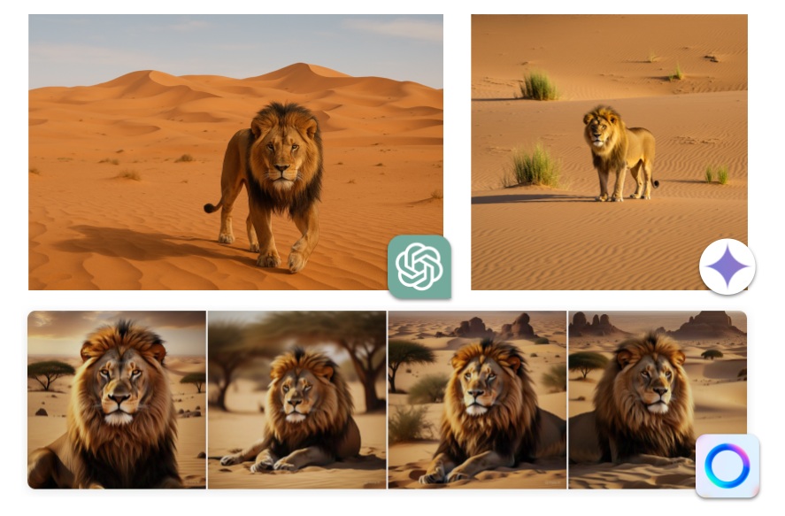
These images were created with ChatGPT (upper left), Gemini (upper right), and Meta (bottom).
This is a great start - but we can do better.
Activity #2: Use Subject, Medium, and Style
What we did before with a simple prompt gave the AI service little context to work with. We can get much better results if we are more specific.
Emily Laird (an AI Integration Technologist) recommends the following recipe:
Subject - What do you want in your image? What is in the background?
Medium - What do you want your image to look like? A photograph? A chalk drawing? A painting?
Style - What genre do you want - steampunk? Minimalism? Renaissance period? Impressionist? You choose!
Once we start adding modifiers to our subject we start getting results that are aligned closer to what we are looking for:
Please generate a lion in the Sahara. Blur the background slightly. The image is made out of clay and looks 3D. The image looks like a still from a claymation show.
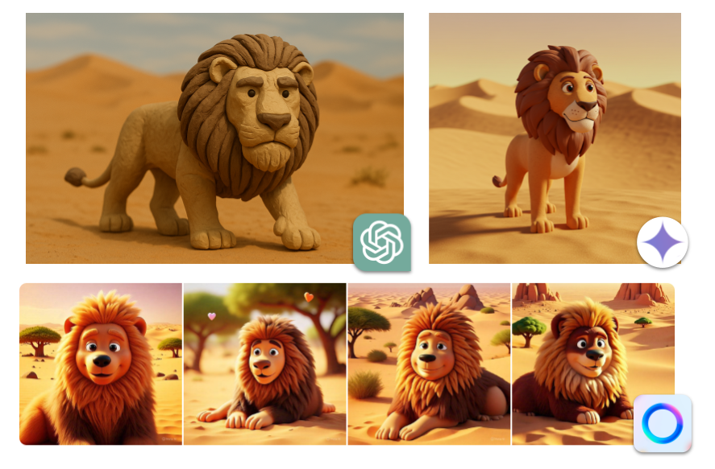
These images were created with ChatGPT (upper left), Gemini (upper right), and Meta (bottom).
That's pretty slick! Notice how all three AI services interpreted the style of claymation a little differently. That's okay! The differences between these services are starting to emerge.
Activity #3: Modify an image the AI created
Most AI services can modify images that you create; you can build on previous iterations. For our case, let's try making it nighttime in the image of the lion (if you are working with different prompts, try a prompt that fundamentally alters the image):
Please make it nighttime in the image.
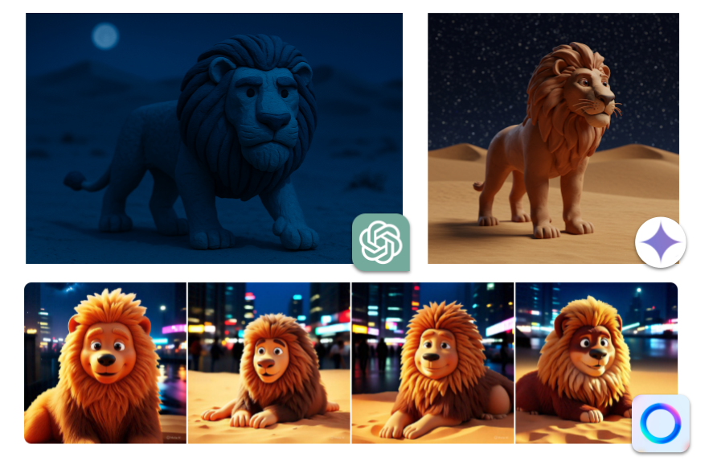
These images were created with ChatGPT (upper left), Gemini (upper right), and Meta (bottom).
In these examples, we can see that Gemini did a great job of reimagining the sky as a nighttime starry sky. But look! The lion actually changed a little (this happens sometimes). The interpretation of nighttime with ChatGPT and Meta are wildly different - but the lions stayed exactly the same.
This is part of the process. Learning how to be more specific and understanding the different styles and medium types really help refine our images.
Activity #4: Listen to Emily Laird's podcast
If you are enjoying creating images with AI, you should spend six minutes to listen to Emily Laird's podcast. She walks through some great prompting tips to generate next-level images.
Feel free to try the prompt she suggested (below) and see what you get. You might want to even try refining it (change the scenery, for example):
Please generate a portrait of a young woman, oil painting, Rembrandt style, dramatic lighting, warm tones.
Enjoy the rest of your day, and don't be afraid to poke around a bit more with AI!
What we think you'll love
Save time on writing and reviewing your communications
Receive real-time feedback and suggestions to improve your writing
Enhance your editing skills by comparing the original and revised drafts
Introduction
This challenge will show you how AI can serve as a valuable writing coach. By using AI to review and suggest improvements, you’ll learn how to refine your professional documents — whether they are emails, reports, proposals, or newsletters.
Activity #1: Getting Feedback on Your Draft
Copy a draft communication into your AI tool
Do not upload protected data, personal information, or anything you wouldn’t share publicly. Consider reviewing emails going to a public audience, reports, proposals, newsletters, course announcements, presentations, or marketing copy.
Please review the following document for clarity, tone, and structure. Provide feedback and suggestions for improvement:
[COPY IN DRAFT COMMUNICATION]
Identify Key Areas for Revision
From the AI’s feedback, select two or three specific aspects to improve. Depending on the AI tool, prompt, and document reviewed, you may see a list of improvements and suggested rewritten text.
Activity #2: Targeted Revisions and Enhanced Feedback
Refine the prompt to request more specific feedback (see challenge #2)
Providing context, details, constraints, output, and perspective helps the AI produce feedback directly related to your current communication needs.
I am writing the standard operating procedures for the workflow in my office. Specifically, the task is how to handle inbound messages in a shared mailbox.
The goal is to ensure that all the people who have access to the mailbox are checking it three times a day, answering emails when it is applicable to them, and covering for others when they are out.
The primary audience is the people who have access to the mailbox (probably around six). Each employee has a specific skillset and should be answering emails pertinent to their domain. In the event that an email is unclassifiable, the first person to encounter it should send a message to everyone else on the team and ask who should be the primary person to respond.
The SOP should be fun, relevant, and easy to follow.
Rate the quality of my work and then propose edits that will strengthen this content.
Pay attention to the readability of the instructions and how beginner-friendly the step-by-step instructions are.
[COPY IN DRAFT COMMUNICATION]
Review the response, apply suggestions, and repeat as desired
Reflect on the improvements and decide if further refinements are needed.
Activity #3: Exploring Different Audience Perspectives
Ask the AI to review your document from multiple perspectives
This can help you repurpose communications for a new audience and ensure your message is optimized for a specific population.
I’m concerned that employees might not see the relevance of this SOP to their workflow. Can you suggest examples and revised instructions that will further engage them and explain the rationale?
The IT Department is concerned that employees may copy sensitive data into their responses. Please help me create a data security and responsible use warning.
I’d like to repurpose this SOP for our summer interns - they are typically first-year college students. Please rewrite the exercise with this audience in mind.
Edit your draft based on the selected suggestions
Compare the before and after versions to see how your communication has improved.
Reflection Questions
What kind of changes did the AI suggest?
Did the AI suggestions enhance your document's quality?
How did specifying a perspective change the feedback you received?
Where would AI-assisted editing be useful in your own professional life?
What we think you'll love
Uploading documents to AI and receiving relevant insight
Customizing summaries from documents
Introduction
By now, you’ve probably seen how AI can make creative idioms, help with writing, and generate images. But here’s the real magic: AI can also understand complex stuff - especially when you give it something specific to work with.
Have a policy manual, research article, or lesson plan you wish you could make sense of faster? Ever wish someone could summarize the key points, answer questions about it, or translate it into plain English?
Let’s do that! You’ll be feeding AI actual documents and seeing what it can extract, explain, or even challenge.
WARNING
Do not upload documents with sensitive content, personally identifiable information, or anything you don't want public. AI tools like ChatGPT, Claude, and Google Gemini train their models on the conversations we have with them - this includes documents you upload!
Activity #1: Choose a Deep Niche
Upload a document that you would like summarized
Pick a topic you care about and have real materials for. Examples include:
A school policy you wish were clearer
A technical manual or how-to guide
A research article or case study
Notes or syllabi from a course you’ve taken or taught
Note that some AI tools (like ChatGPT) might not allow file uploads - or limit the number of uploads - on the free plans. That's OK! Google Gemini allows for file uploads on the free plan!
These tools can "read" documents and respond based on that information. Upload your document and say something like:
I’ve uploaded a PDF. Can you help me summarize the key points in a way that’s easy to understand?
[COPY IN DRAFT COMMUNICATION]
What are 3 things most people might misunderstand about this document?
You’re not just prompting AI - you’re letting it learn from your materials. And that learning can unlock nuanced insight into your conversation.
Activity #2: Ask Nuanced Questions
Now that AI has access to your document, try pushing further:
What are the implications of this policy for teachers in special ed?
Can you rewrite this section in plain language for parents?
What questions would you ask if you were trying to improve this training guide?
How would this apply in a rural context vs. an urban one?
The goal here is to see how AI can move beyond surface summaries — and into deeper insight.
Bonus Activity: Upload Multiple Documents
If you have a number of documents (for instance, chapters from a textbook or state and federal guidelines for financial aid), you can upload them into the same chat and ask for insight across the documents. Congratulations - this chat has become a knowledge management system and you can always return to this chat later on to ask questions.
In the next challenge, we'll look at some wild ways to level-up prompting based on multiple documents.
What we think you'll love
Turning complex reading into an instant Podcast
Generating Flashcards and Quizzes to test your knowledge
Having a Chatbot that only knows what you tell it (no hallucinations!)
Creating a video based on your sources
Introduction
NotebookLM is a Google tool that helps you make a Chatbot for your own personal use. It is different from other AI tools because of grounding (that means that instead of searching the entire internet, all responses are based on the specific documents you upload). This is especially helpful for times when you need to process specific information for a task:
Instructional design for a course you are teaching
Researching a topic of interest
Managing technical documents like the federal requirements for financial aid
Imagine you have a team of experts who have read only the documents you gave them. One expert answers your questions with citations. Another writes study guides and quizzes. A third creates videos, and two others host a radio show about your topic. That is NotebookLM. And it's awesome.
NotebookLM is a very powerful tool. We will only look at some of the things you can do with it, but once you get the basics you should feel confident exploring on your own.
Activity #1: Lay of the Land
Since we are looking at a specific tool in this challenge, we should understand the layout of NotebookLM. Head over to notebooklm.google.com and hit the "Create new" button in the upper right. Once you create a notebook, you'll get a pop-up asking for sources - close that for now.
Note that there are three "panes":
Sources: The left pane is where all your sources will be - PDFs, websites, YouTube videos - everything you want to include for this notebook.
Chat: The middle pane is the chat. This is where you will ask questions and work with the AI.
Studio: This is the fun part! You'll make podcasts, videos, flashcards, quizzes, and infographics here.
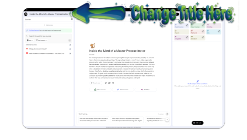
Adding Documents
For this challenge we will be creating a Chatbot for a College Success course. If you'd rather, you can use documents and links that are relevant to what you do.
STEP 1: Get a PDF to upload
Download the PDF we will be using. It is an OER from OpenStax called College Success Concise.
STEP 2: Upload the PDF
Click on the "Add sources" button in the Sources pane on the left and find the PDF you just downloaded. Add it to your notebook.
STEP 3: Add a YouTube link
Click on the "Add sources" button again and paste in this YouTube video ("Inside the Mind of a Master Procrastinator by Tim Urban for TED"): https://www.youtube.com/watch?v=arj7oStGLkU
You can add as many sources as you want - files, URLs, videos, etc. but for this challenge, two is enough.
You'll note that the title of your notebook is derived automatically from your content. If you'd like to change it, simply click in the title on the top left and change it to whatever you'd like.
You'll also note that the chat now has a summary that is also automatic.
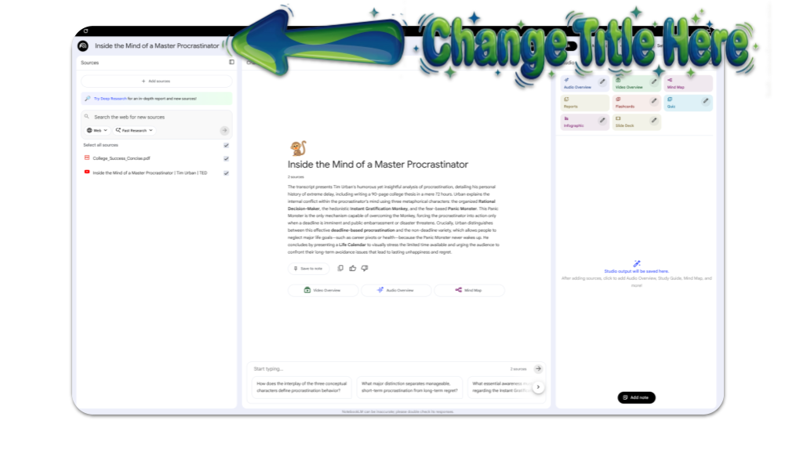
Activity #2: The Grounded Chatbot
STEP 1: Ask the Chatbot Questions
In the chat box, ask a specific question. You might try:
What are the top three things I can tell new students to help them adjust to college life?
Please explain the concept of "growth mindset", why it is important for learning, and how I can start practicing it.
Don't forget that NotebookLM is generating responses exclusively from the content you've uploaded!
STEP 2: Check the Receipts:
When it answers, look for the gray citation numbers at the end of the sentences. Click on one. Watch how it highlights the exact paragraph in your original document where it found the answer. This is how you verify truth.
STEP 3: Save to Note
Unlike ChatGPT, Gemini, or Claude, conversations you have in NotebookLM are ephemeral. If you leave the notebook and return later, the chat window is empty.
If you find the responses useful, click on the "Save to note" button under the response. This will save the note in the Studio tab on the right. Not only is the entire response saved, but all the citations will be there, too!
Activity #3: The Study Suite (Flashcards & Quizzes)
STEP 1: Make Flashcards
The right pane, Studio, is where all the magic happens. You'll note that there are a number of options here. Let's start with "Flashcards".
Click on the pencil icon to configure the options - choose whatever options you'd like. You don't have to put any instructions in the text box (but you can if you want!).
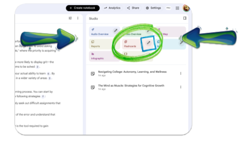
STEP 2: Make a Quiz
Similarly, you can configure a quiz, too. Or a mind map. Or a slide deck. Or an infographic. Note that if you make a slide deck, each slide will be one big image (which makes the slide less accessible for screen readers).
Here's the infographic NotebookLM generated (again, this is all one image so the alt text would need to be substantial to make it ADA compliant - but you could always upload the image to AI and have it generate the alt text for you):
Activity #4: The "Magic" Podcast
This is the feature that has gone viral. You can turn your reading list into a listening list.
STEP 1: Locate Audio Overview
Look for the "Audio Overview" section (usually near the top of the Notebook Guide on the left).
STEP 2: Generate
Click the "Generate" button. This will take a few moments.
STEP 3: Listen
Wait a moment, and you will hear two AI hosts discussing your specific content. They banter, interrupt each other, and use metaphors to explain your documents. Check out the podcast from this notebook:
Activity #5: Explore
NotebookLM is extraordinarily powerful. It is an incredible tool for research but it's also incredible as an informed resource. Imagine putting all your policies and procedures into NotebookLM and using the Chatbot function when questions arise. Or consolidating complicated, comprehensive material into digestible videos.
The best way to understand the power of NotebookLM is to explore. Go ahead! Remember, you can't AI wrong. Go out and find a great use for NotebookLM!
And before you go, check out this video if you are interested in the explainer NotebookLM made based on the college success content:
What we think you'll love
Hands-free conversation mode with AI
A natural way to converse
Introduction
All of the AI tools we've looked at (ChatGPT, Gemini, Claude, Copilot, Grok, and Meta) have a "Voice Mode" - you can talk to AI (instead of typing)! This is a particularly productive way to interact with AI - especially if you are slow at typing. The experience is great - it's like having a conversation with another person. Voice Modes is also helpful for times when you are:
Doing chores around the house
Driving
Walking doggos
One interesting way to use Voice Mode is when you want to explore an idea - not necessarily engage in a productivity conversation.
Activity #1: Engage Voice Mode
Almost all of the AI tools have a microphone button (or speech button) in the same place you type text. If you click the button, you'll be in Voice Mode. The exception to this is Microsoft Copilot 365 - you'll have to dig around in the settings to access the "Dictate" function.
Once you have engaged Voice Mode, have a typical conversation. If you have a topic you'd like to talk about, go for it. Feel free to use some of the examples below. Make sure you have several exchanges with AI so you can fully experience the power of the conversation.
Just like a typical conversation with AI, you should have a separate chat for unrelated topics. If you revisit this conversation later, you can engage Voice Mode if you'd like.
Lastly, most of the AI tools will keep a transcript of your conversation so you can reference it later.
Ideas for Conversations:
"Are you familiar with the research that shows there are many more cardiac events in the days following Daylight Savings when we lose an hour of sleep?"
[Wait for response]
"Can you tell me more about why this might be?"
"How many movies have won all five major Academy Awards?"
"I'm debating installing a skylight in my kitchen. What are some of the things I should be aware of?"
The power of engaging in Voice Mode is that you can converse naturally with AI. You'll notice that after AI responds, it will most likely give you more things to follow up on. Even if you don't find some of the suggestions helpful, ask follow-up questions to continue the conversation!
Bonus Activity: Use the widget on your phone
Most of the AI tools also have widgets that you can install on your phone. These widgets have shortcuts that make it very easy to start a chat session.
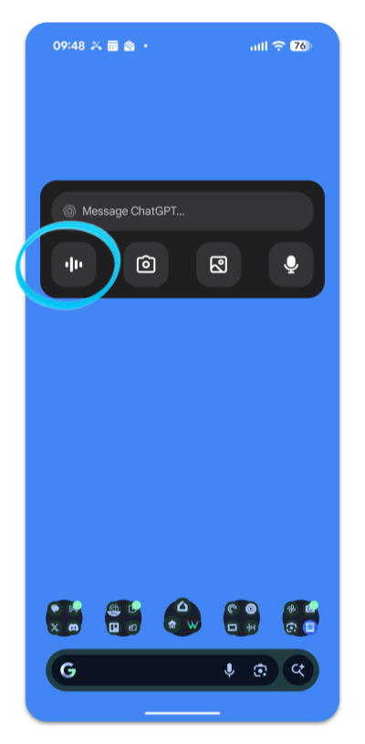
Have fun talking with AI!
What we think you'll love
Moving beyond generic responses into nuanced, sophisticated outputs
Learning a structured framework for complex prompts (CRAFT)
Building high-caliber briefs that get professional-grade results
Introduction
By now, you've experienced how prompt refinement (Challenge #3) can dramatically improve AI outputs. In this challenge, we are going to level up!
There are two kinds of advanced prompting: tactical and strategic. Tactical prompting (CRAFT) works when you have a moderately complex task. Strategic prompting (which we call "high-end") is for the really big, messy, real-world problems where you're asking AI to think through multiple stakeholders, competing priorities, and constraints.
The difference is this: a CRAFT prompt might help you design a syllabus or a discussion question whereas a high-end prompt might help you redesign an entire program, build a community initiative, or solve an organizational challenge.
Activity #1: Mastering the CRAFT Method
C.R.A.F.T. is an acronym for five elements that structure a prompt:
CONTEXT: Why are you asking? What situation created this need? What does AI need to understand about your world?
REQUEST: What is the actual thing you want AI to produce? Be clear about the end product.
ACTIONS: What should AI actually do to complete the request? What steps or elements need to be included?
FRAME: What constraints or specifications matter? Length? Audience? Tone? Assumptions to make?
TEMPLATE: What structure or format should the output follow?
In the three prompts below, each new paragraph corresponds to one of the five parameters above. Try running one (or more!) of these prompts to see the type of response you get from AI.
CRAFT PROMPT #1 - Designing a clear syllabus
You are a college instructor who values accessibility and student success. You understand that a good syllabus is a contract, a roadmap, and a communication tool.
Write a comprehensive but readable course syllabus that clearly sets expectations while making students feel welcomed into the course.
Include course learning objectives, assessment methods, course policies, communication expectations, support resources, and a week-by-week schedule. Organize information so students can find what they need quickly.
Keep it to 3-4 pages (accessibility through brevity). Use plain language - no jargon. Address both in-person and remote learners. Assume students haven't read a syllabus before and may be anxious about the course.
Organize as: Welcome statement, Course overview, Learning objectives, Assessment overview, Course policies, Communication/support resources, Week-by-week schedule.
CRAFT PROMPT # 2: Creating an Effective Discussion Prompt
You are an instructor facilitating meaningful online discussion in a community college course. You want students to think deeply while feeling safe to participate.
Write a discussion prompt that encourages critical thinking and authentic peer engagement.
Ask an open-ended question that connects to course concepts, invite students to share examples from their own experience, ask follow-up thinking (e.g., "What might explain this?"), encourage respectful disagreement.
The prompt should take 5-10 minutes to read and understand. Assume some students are introverts and some have limited time. Create psychological safety - no "gotcha" questions.
Format as: Compelling opening question, 2-3 clarifying prompts, one reflection question that deepens thinking, guidance on respectful disagreement.
CRAFT PROMPT #3: Building an Accessible Web Form
You are a developer creating a web form for a non-profit that serves people with varying levels of tech comfort and accessibility needs.
Design a form that collects necessary information while being accessible, intuitive, and respectful of user data.
Use clear labels and logical field ordering, provide helpful error messages, include keyboard navigation, explain why you're asking for each piece of information, offer multiple ways to complete the form (web, phone, in-person).
Keep it under 10 fields if possible. Don't ask for Social Security numbers unless absolutely necessary. Assume some users have screen readers or limited vision.
Format as: Clear heading, brief explanation of purpose, form fields with descriptive labels, submit and reset buttons, privacy statement, alternative completion methods.
Notice what happened: you told AI not just what you want, but why you want it, who you are, what to include, what constraints matter, and what shape it should take. That's vastly different from "write me a syllabus." Try CRAFTing a prompt yourself! Pick a moderately complexity task from your own work. This might be:
A lesson plan that incorporates multiple learning styles
An email to parents explaining a policy change
A job posting that attracts the right candidates and sets clear expectations
A rubric for evaluating student work
An onboarding guide for new volunteers
Now structure your prompt using CRAFT. Open an AI tool and paste in your CRAFT-structured prompt. Notice the difference in quality compared to a generic request.
Activity #2: High-End Prompting
CRAFT works beautifully for tactical tasks. But what if you're tackling something bigger? Something that involves multiple stakeholders, competing values, systemic constraints, and real-world messiness?
That is when you move to high-end prompting.
High-end prompts take CRAFT further. They add more scaffolding: a clear Objective, a defined Role for AI to inhabit, richer Context, specification of Format and Audience, Tone guidance, Timeframe expectations, and explicit Restrictions.
These prompts are longer. They're more specific. And they produce outputs that are dramatically better - and often immediately usable. Consider the elements of a sophisticated prompt:
OBJECTIVE: What is the big-picture goal? What problem are you trying to solve or system are you trying to design?
ACTION: What do you want AI to actually create? (Program blueprint, strategic plan, initiative design, etc.)
ROLE: What expertise should AI assume? What is AI an expert in?
CONTEXT: What is the real-world situation? What constraints, pressures, and competing interests exist? What has been tried before?
FORMAT: How should the output be structured? What sections, deliverables, or components matter?
AUDIENCE: Who will read/use this? What do different stakeholders care about? What might they be skeptical of?
TONE: What is the right voice? Professional? Optimistic? Grounded? Realistic about tradeoffs?
TIMEFRAME: What is the realistic timeline for implementation? When should impact show up?
RESTRICTIONS: What should AI not do? What lines should it not cross? What values must be preserved?
In the three prompts below, each new paragraph corresponds to one of the five parameters above. Try running one (or more!) of these prompts to see the type of response you get from AI.
HIGH-END PROMPT #1: Designing an AI-Enhanced Competency-Based Learning Program
Design a comprehensive, competency-based learning program that uses AI strategically to personalize student pathways while maintaining genuine human interaction and critical thinking development.
Create a detailed program blueprint that includes learning objectives, AI integration points, assessment methods, student support structures, and implementation milestones.
You are an innovative instructional designer with expertise in competency-based education, adult learning theory, educational technology, and the ethical implementation of AI in higher education. You understand both the pedagogical benefits and potential pitfalls of AI in learning environments.
Community colleges are facing enrollment pressures and employer demands for demonstrable competency outcomes. Many students balance work and family responsibilities and need flexible pathways. There's growing skepticism about AI in education, so trust and transparency are critical. Institutions need to show that AI enhances rather than replaces meaningful learning experiences.
Present your program as a modular blueprint with: program vision statement, 5-7 core competencies with clear performance indicators, 3-4 specific AI integration points (with pedagogical justification for each), student journey map for a typical learner, assessment strategy that balances automation and human judgment, and one implementation roadmap for Year 1.
Your audience includes skeptical faculty members, technology-hesitant administrators, students who value personalization, and employers seeking work-ready graduates. Some prefer visual representations, others need detailed narratives. All want evidence that this serves student learning, not just institutional efficiency.
Professional yet approachable - demonstrate innovation without overselling technology. Show genuine concern for student success and faculty agency. Be honest about AI limitations alongside its benefits.
This program should be pilotable within 12-18 months and show measurable competency attainment improvements within the first cohort.
Do not suggest replacing human instruction or feedback with AI alone. Ensure the program maintains accessibility for students with diverse learning needs and technology comfort levels. Avoid surveillance-style data tracking; prioritize student data privacy. Do not recommend solutions that disadvantage low-tech or non-traditional students. Include at least two non-AI strategies that enhance learning. All AI tools must be explainable to students - no "black box" algorithms.
HIGH-END PROMPT #2: Building a Year-Round, Community-Centered Tourism Experience in the Finger Lakes
Develop a distinctive, year-round tourism experience that attracts visitors across all seasons while authentically supporting local small businesses, farmers, artisans, and communities - not extracting value from them.
Create a comprehensive tourism experience design that includes signature offerings for each season, partnership strategies with local businesses, marketing positioning, revenue models, and community benefit mechanisms.
You are an experienced tourism strategist with expertise in sustainable destination development, rural economic development, experiential travel design, and building authentic community partnerships. You understand both the business imperatives and the responsibility to preserve community character.
The Finger Lakes area has tremendous seasonal variability - summer wine tourism is strong, but fall-winter-spring visitor traffic drops significantly, leaving small businesses vulnerable. Many tourism dollars leak out of the region through chain hotels and corporate operators. There's growing traveler interest in authentic, locally-rooted experiences rather than generic tourism products. Local communities are wary of over-tourism and cultural commodification. Small independent businesses (wineries, farms, galleries, restaurants, lodges) lack coordination and marketing reach individually.
Present your experience design as: a year-round experience framework with specific seasonal offerings for each quarter, three to four strategic partnerships you'd establish with local businesses (showing how mutual benefit works), a positioning/marketing narrative that differentiates this from generic Finger Lakes tourism, a sustainable revenue model showing how money cycles through the local economy, and one concrete pilot project for the next 9 months.
Your audience includes skeptical small business owners who've been burned by tourism promises, community leaders concerned about preservation, potential investors/partners, and increasingly sophisticated travelers seeking authentic experiences. Some are tech-savvy, others prefer word-of-mouth and traditional marketing. All want to see tangible local benefit.
Grounded and realistic - celebrate what makes the Finger Lakes genuinely distinctive without romanticizing rural life. Show respect for both business viability and community wellbeing. Be transparent about trade-offs and challenges.
The experience should launch core offerings within 6-9 months and demonstrate meaningful visitor engagement and local business revenue impact within 12 months.
Do not suggest solutions that commodify or exploit local culture or natural resources. Avoid strategies that prioritize visitor volume over visitor quality or community capacity. Do not recommend extractive models (franchise operations, outside ownership, corporate consolidation). Ensure accessibility for visitors with disabilities and varying economic means. Include at least two offerings that actively engage visitors with local environmental stewardship or community contribution. Do not rely solely on wine tourism - create genuine diversification. All partnerships must show clear, measurable benefit flowing back to local small business owners and communities, not just to the tourism operator.
HIGH-END PROMPT #3:Transforming Food Insecurity Response in Rochester from Emergency Aid to Economic Resilience
Design an integrated food insecurity initiative that moves beyond emergency distribution toward building sustainable economic resilience, community food sovereignty, and systemic change - while meeting immediate survival needs.
Develop a comprehensive program blueprint that addresses both urgent food access and underlying economic barriers, including specific interventions, community partnerships, measurement strategies, and a 24-month implementation roadmap.
You are an experienced community development strategist with expertise in food systems, anti-poverty work, community organizing, economic justice, and systems-level change. You understand Rochester's specific neighborhood dynamics, existing non-profit landscape, and the lived experience of food insecurity across the city's diverse communities.
Rochester has deep food insecurity rooted in poverty, unemployment, housing instability, and transportation barriers - not just lack of charity. Many neighborhoods lack fresh food access. Existing aid (food pantries, soup kitchens) saves lives but doesn't address root causes. Community members often experience fragmented services and loss of dignity. There's siloing among non-profits and insufficient coordination with employers, schools, and other systems. Winter weather compounds challenges. Families need reliable, year-round solutions tied to economic opportunity, not temporary patches.
Present your initiative as: a tiered intervention model (emergency response + medium-term stability + long-term economic resilience), three to four specific programs that address different population segments or barriers, a community partnership strategy showing how existing organizations coordinate rather than duplicate, a measurement framework that tracks both immediate food access and longer-term economic indicators, concrete workforce/economic opportunity connections, and a detailed implementation plan for months 1-6.
Your audience includes non-profit leaders (sometimes protective of turf), city officials with budget constraints, community members with lived experience of food insecurity, employers skeptical about hiring from vulnerable populations, foundation officers seeking measurable impact, and faith communities active in service. Perspectives range from those focused on emergency aid to those pushing for systemic change. All want to see both immediate relief and genuine progress.
Grounded in dignity and respect for community expertise. Acknowledge that food insecurity is not a personal failing but a systems failure. Show ambitious vision while being realistic about constraints. Center the voices and agency of people with lived experience, not just professional expertise.
Launch pilot interventions within 3-4 months, demonstrate measurable food security improvement within 12 months, and show movement toward economic stability indicators (employment, income, housing security) within 24 months.
Do not propose solutions that increase surveillance, shame, or bureaucratic burden on recipients. Avoid charity-model thinking; prioritize approaches that build power and agency. Do not suggest programs that fragment services further - integrate across existing non-profit ecosystems. Ensure culturally appropriate food access that respects community preferences and heritage. Include at least three programs/elements that connect directly to employment, income-building, or economic opportunity (not just food distribution). Do not recommend solutions that work only seasonally or require perfect weather/transportation. Address both food access and interconnected barriers (transportation, childcare, housing, health). Any technology solutions must be accessible to people with limited digital literacy or connectivity. All measurements should include indicators chosen by community members, not just institutional metrics.
Have fun with some sweet, sweet prompting knowledge!
What we think you'll love
Use AI to create a simple web app (no coding experience needed!)
Understand how to ask for and modify code
Preview and tweak your own working web app
Introduction
A Pomodoro Timer is a time management method that uses a timer to break down work into intervals, traditionally 25 minutes in length, separated by short breaks. The technique, named after the Italian word for "tomato" since the inventor used a tomato-shaped kitchen timer, is used to improve focus and productivity by reducing the mental fatigue associated with long, continuous work sessions, ensuring regular breaks help to maintain cognitive agility, and creating a sense of urgency to complete tasks within the set time box.
If you Google "pomodoro timer", you're likely to find a number of websites that have Pomodoro Timers you can use.
Today we are interested in making one from scratch. We don't need to know how to code - this is just a fun experiment!
This is vibe coding: not memorizing everything, but letting AI help you make something that works. Let’s build a timer, even if you’ve never written a line of code before.
Activity #1: Build a Basic Pomodoro Timer
Although you can use ChatGPT for this, Google Gemini and Claude are much better for coding. ChatGPT only gives you the code to use (then you have to download it and run it). Gemini and Claude will give you the code and let you run it without any fuss.
Open up Gemini or Claude and enter the prompt below. Note that if you use Gemini, you should add the "Canvas" from the Tools menu; if you use Claude, the canvas will automatically pop open. The Canvas is where you can see the code - and see the app you create!
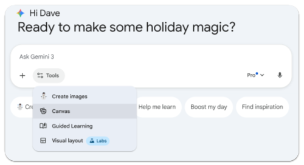
I’ve never coded before, but I want to build a simple Pomodoro timer using just one HTML file. Can you give me a basic version and explain how to use it?
AI will make the web app for you! It's called a "web app" because it's an application that is designed for the web (we use this term to differentiate it from the common understanding of "app" as an application you install on your phone).
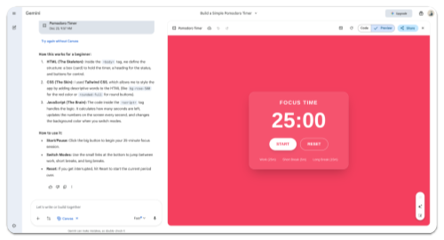
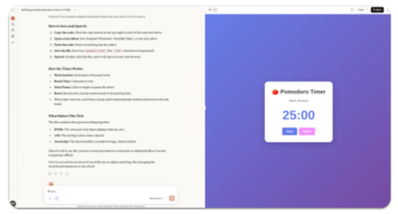
Activity #2: Make It Yours
Now, time to add vibes. Let's try tweaking the aesthetics to make the app reflect our personal taste. Ask AI:
Please help me make the timer look like a neon clock.
Please add sound when the timer ends.
Please make the background slowly change colors.
You’re now modifying the app to feel more you. This is where coding becomes creative - and AI becomes your design partner.
Activity #3: Make a Change
Let's make some structural changes. Think about things you'd like to change. Have AI help you make those changes. Consider some of the following:
Please let the user change the duration of the timer.
Please let the user enter a task that they want to complete. Display that task under the timer.
Please let the user choose between a short break (5 minutes) and a long break (15 minutes). This should be done with a toggle that can be used at any time.
Making a Pomodoro Timer is a good starting project for vibe coding. The idea is popular so AI can be pretty successful out of the gate. As you gain confidence and experience vibe coding, you might find that the more specialized your app is, the more you'll have to wrangle AI. That's okay! That's the fun part!
This is just the beginning of vibe coding! The next step includes learning how to take the app you built and put it to use (in Brightspace, on your desktop, etc.).
![The infographic titled “The Procrastinator’s Brain: Why You Wait Until the Last Minute” explains procrastination using cartoon characters inside a cutaway brain. Three characters are introduced: The Rational Decision-Maker, described as the part of your brain that wants to make sensible, long-term plans and do productive work, shown as a calm person in a blue suit at a desk with organized papers and a computer; The Instant Gratification Monkey, which lives entirely in the present moment and only cares about what is easy and fun, illustrated as a joyful monkey in a party hat surrounded by pizza, video game controllers, music notes, phones, and social media icons; and The Panic Monster, which is dormant until a deadline gets too close and is the only thing the Monkey fears, depicted as a large red creature curled around an alarm clock. The infographic outlines “The System: How Procrastination Unfolds” in three steps. Step 1, “The Monkey Seizes Control,” shows the monkey hijacking the controls from the Rational Decision-Maker to do something fun instead of working. Step 2, “Entering the ‘Dark Playground,’” represents leisure happening when it shouldn’t, with scenes like a roller coaster, dark rain clouds, and scattered entertainment devices symbolizing guilt, anxiety, and dread. Step 3, “The Panic Monster Awakens,” shows looming deadlines waking the Panic Monster, which scares the monkey away and finally lets work begin. Next, the infographic presents “The Two Types of Procrastination.” Short-Term Procrastination (with deadlines) is portrayed with a person working urgently at a desk stacked with papers labeled “DEADLINE” while the Panic Monster looms, with the caption explaining that effects are contained because the Panic Monster eventually forces action. Long-Term Procrastination (with no deadlines) shows a person rowing a small boat down a winding river while the Panic Monster sleeps beside them; the text warns this is more dangerous because the Panic Monster has nothing to wake up for, so inaction can last forever. Beneath this, an illustration labeled “Theater of Life” shows a spectator watching actors on stage, paired with the caption “The Hidden Cost,” explaining that long-term procrastination can make you feel like a spectator in your own life, unable to start chasing your dreams. The image ends with a small NotebookLM logo.](images/notebooklm-procrastination-infographic.png)
![A side-by-side comparison of four AI chatbot mobile interfaces is shown, each displayed on a smartphone screen. From left to right, the interfaces belong to ChatGPT, Gemini, Claude, and Copilot. | ChatGPT (far left): The interface is dark-themed with a greeting text, “What can I help with?” and several colorful options below such as “Create image,” “Summarize text,” “Code,” “Make a plan,” and “More.” The ChatGPT logo is visible at the bottom left. The microphone button at the bottom input bar is circled in light blue, indicating voice input availability. | Gemini (second from left): Also in dark mode, the screen greets the user “Hi Dave” and suggests prompts like “Make me a chart on seasonal travel” and “Code a breathing box mini app with 3 Pro.” Various options like “Create image,” “Write anything,” and “Deep Research” are listed as rounded buttons. The Gemini logo is shown bottom left. The microphone icon in the input bar is highlighted with a light blue circle. | Claude (third from left): The screen has a minimalist dark brown background with a centered orange flower-like icon and the message “How can I help you this morning?” The Claude logo is displayed in the bottom left, and the microphone icon is again circled in light blue in the message input field. | Copilot (far right): The interface features a dark blue gradient background with the prompt “What’s on today’s agenda?” at the center. The message input bar contains a microphone icon, also circled in light blue. The Copilot logo is placed at the bottom left above the navigation bar. | All four screens show voice input features highlighted in light blue circles, suggesting a comparison of voice input accessibility across different AI assistant apps.](images/voice-mode-microphone-buttons.png)